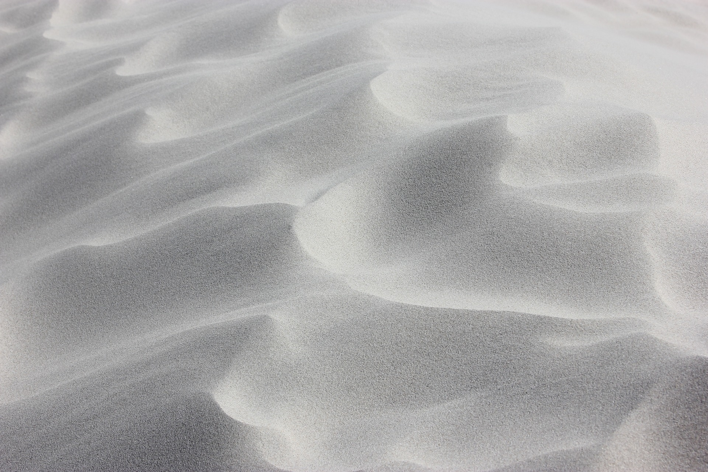
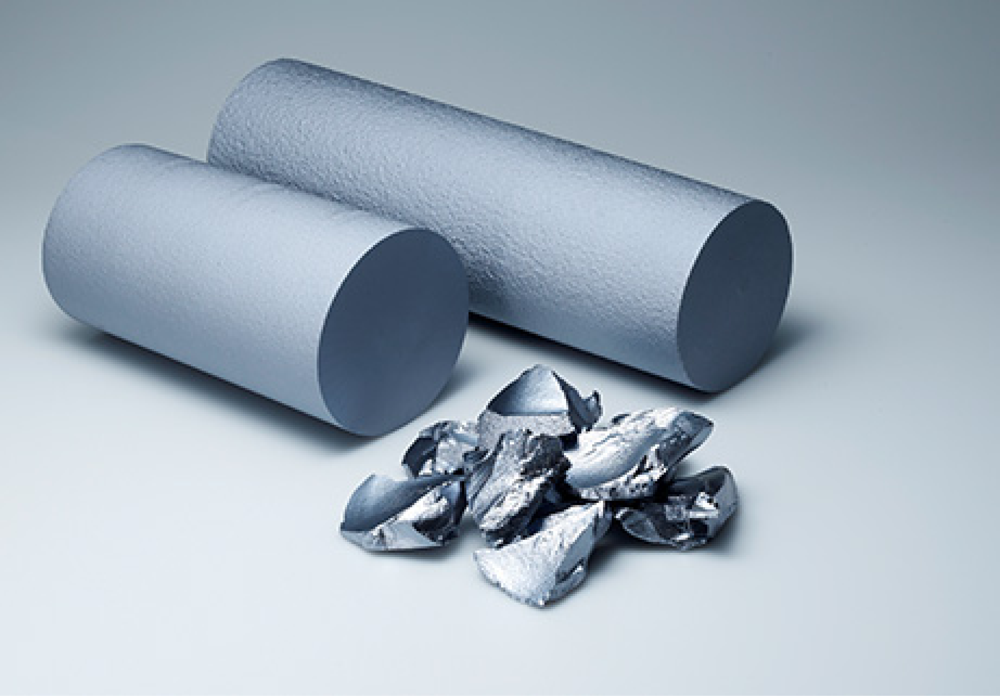
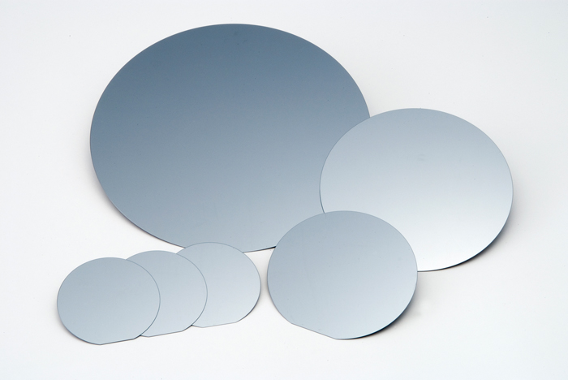

Sản Phẩm Chính

Cát Silica
Cát silica (“Silica sand”) được cấu thành từ Silicon Dioxide (“SiO2”)- một hợp chất tương đối cứng
và trơ về mặt hóa học. Cát silica có thể được khai thác trong tự nhiên ở các khu vực ven biển
Silicon Thỏi
Silicon thỏi (“Silicon ingot”) được tạo thành lần lượt thông qua hai
công đoạn là (i) chiết xuất và (ii) làm sạch silicon luyện kim – vốn là một bán thành phẩm từ cát
silica. Silicon thỏi chứa hàm lượng silicon nguyên chất ≥99.99%.


Đĩa Bán Dẫn Silicon
Silicon thỏi (“Silicon ingot”) được tạo thành lần lượt
thông qua hai công đoạn là (i) chiết xuất và (ii) làm sạch silicon
luyện kim – vốn là một bán thành phẩm từ cát silica. Silicon thỏi chứa hàm lượng silicon nguyên chất
≥99.99%.